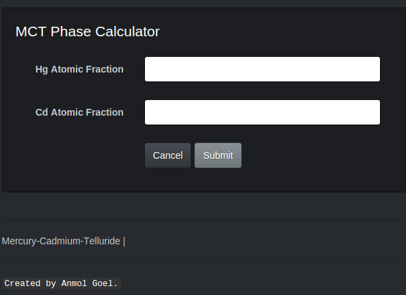

Go checkout the site now!
You can check out the website here
. Play around with various input values and observe how the ouput changes.
The Hg and Cd inputs are the mole fractions of Mercury and Cadmium respectively. T is temperature and X is Cadmium composition.
These values are important for carrying out meaningful work in Liquid Phase Epitaxy (LPE) Labs.
